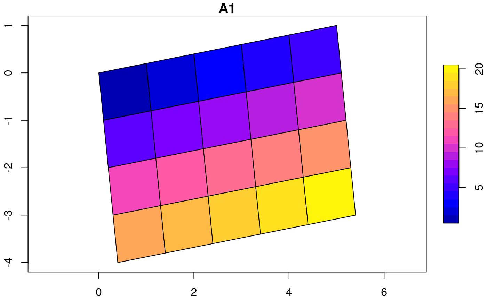

This vignette explains the data model of stars objects, illustrated using artificial and real datasets.
Stars objects
stars objects consist of
- a (possibly empty) named list of arrays, each having named dimensions
- an attribute called
dimensionswith adimensionsobject carrying dimension metadata - a class name that includes
stars
A dimensions object is a named list of dimension elements, each describing the semantics a dimension of the data arrays (space, time, type etc). In addition to that, a dimensions object has an attribute called raster of class stars_raster, which is a named list with three elements:
-
dimensionslength 2 character; the dimension names that constitute a spatial raster (or NA) -
affinelength 2 numeric; the two affine parameters of the geotransform (or NA) -
curvilineara boolean indicating whether a raster is a curvilinear raster (or NA)
The affine and curvilinear values are only relevant in case of raster data, indicated by dimensions to have non-NA values.
A dimension object describes a single dimension; it is a list with named elements
-
from: (numeric length 1): the start index of the array -
to: (numeric length 1): the end index of the array -
offset: (numeric length 1): the start coordinate (or time) value of the first pixel (i.e., a pixel/cell boundary) -
delta: (numeric length 1): the increment, or cell size -
refsys: (character, orcrs): object describing the reference system; e.g. the PROJ string, or stringPOSIXctorPCICt(for 360 and 365 days/year calendars), or object of classcrs(containing both EPSG code and proj4string) -
point: (logical length 1): boolean indicating whether cells/pixels refer to areas/periods, or to points/instances (may be NA) -
values: one of-
NULL, - a vector with coordinate values (numeric,
POSIXct,PCICt, orsfc), - an object of class
intervals(a list with two vectors,startandend, with interval start- and end-values), or - a matrix with longitudes or latitudes for all cells (in case of curvilinear grids)
-
Clearly, offset and delta only apply to regularly discretized dimensions, and are NA if this is not the case. from and to will usually be 1 and the dimension size, but from may be larger than 1 in case a regular sub-grid got cut out or was cropped. Rectilinear and curvilinear grids need grid values in values; this can be irregularly spaced coordinate values, or coordinate intervals of irregular width, or spatial geometries encoded in an sfc vector (“list-column”), or a matrix with grid cell centre values (longitude or latitude) for curvilinear grids.
Grid type
Regular grids
With a very simple file created from a \(4 \times 5\) matrix
suppressPackageStartupMessages(library(stars))
m = matrix(1:20, nrow = 5, ncol = 4)
dim(m) = c(x = 5, y = 4) # named dim
(s = st_as_stars(m))
## stars object with 2 dimensions and 1 attribute
## attribute(s):
## A1
## Min. : 1.00
## 1st Qu.: 5.75
## Median :10.50
## Mean :10.50
## 3rd Qu.:15.25
## Max. :20.00
## dimension(s):
## from to offset delta refsys point values
## x 1 5 0 1 NA FALSE NULL [x]
## y 1 4 0 1 NA FALSE NULL [y]we see that
- the rows (5) are mapped to the first dimension, the x-coordinate
- the columns (4) are mapped to the second dimension, the y-coordinate
- the
fromandtofields of each dimension define a range that corresponds to the array dimension:
- offset and delta specify how increasing row and column index maps to x and y coordinate values respectively.
When we plot this object, using the image method for stars objects,

we see that \((0,0)\) is the origin of the grid (grid corner), and \(1\) the coordinate value increase from one index (row, col) to the next. It means that consecutive matrix columns represent grid lines, going from south to north. Grids defined this way are regular: grid cell size is constant everywhere.
Many actual grid datasets have y coordinates (grid rows) going from North to South (top to bottom); this is realised with a negative value for delta. We see that the grid origing \((0,0)\) did not change:

An example is the GeoTIFF carried in the package, which, as probably all data sources read through GDAL, has a negative delta for the y-coordinate:
Raster attributes, rotated and sheared grids
Dimension tables of stars objects carry a raster attribute:
str(attr(st_dimensions(s), "raster"))
## List of 3
## $ affine : num [1:2] 0 0
## $ dimensions : chr [1:2] "x" "y"
## $ curvilinear: logi FALSE
## - attr(*, "class")= chr "stars_raster"which is a list that holds
-
dimensions: character, the names of raster dimensions (if any), as opposed to e.g. spectral, temporal or other dimensions -
affine: numeric, the affine parameters -
curvilinear: a logical indicating whether the raster is curvilinear
These fields are needed at this level, because they describe properties of the array at a higher level than individual dimensions do: a pair of dimensions forms a raster, both affine and curvilinear describe how x and y as a pair are derived from grid indexes (see below) when this cannot be done on a per-dimension basis.
With two affine parameters \(a_1\) and \(a_2\), \(x\) and \(y\) coordinates are derived from (1-based) grid indexes \(i\) and \(j\), grid offset values \(o_x\) and \(o_y\), and grid cell sizes \(d_x\) and \(d_y\) by
\[x = o_x + (i-1) d_x + (j-1) a_1\]
\[y = o_y + (i-1) a_2 + (j-1) d_y\] Clearly, when \(a_1=a_2=0\), \(x\) and \(y\) are entirely derived from their respective index, offset and cellsize.
Note that for integer indexes, the coordinates are that of the starting edge of a grid cell; to get the grid cell center of the top left grid cell (in case of a negative \(d_y\)), use \(i=1.5\) and \(j=1.5\).
We can rotate grids by setting \(a_1\) and \(a_2\) to a non-zero value:
attr(attr(s, "dimensions"), "raster")$affine = c(0.1, 0.1)
plot(st_as_sf(s, as_points = FALSE), axes = TRUE, nbreaks = 20)
The rotation angle, in degrees, is
Sheared grids are obtained when the two rotation coefficients, \(a_1\) and \(a_2\), are unequal:
attr(attr(s, "dimensions"), "raster")$affine = c(0.1, 0.2)
plot(st_as_sf(s, as_points = FALSE), axes = TRUE, nbreaks = 20)
Now, the y-axis and x-axis have different rotation in degrees of respectively
Rectilinear grids
Rectilinear grids have orthogonal axes, but do not have congruent (equally sized and shaped) cells: each axis has its own irregular subdivision.
We can define a rectilinear grid by specifying the cell boundaries, meaning for every dimension we specify one more value than the dimension size:
x = c(0, 0.5, 1, 2, 4, 5) # 6 numbers: boundaries!
y = c(0.3, 0.5, 1, 2, 2.2) # 5 numbers: boundaries!
(r = st_as_stars(list(m = m), dimensions = st_dimensions(x = x, y = y)))
## stars object with 2 dimensions and 1 attribute
## attribute(s):
## m
## Min. : 1.00
## 1st Qu.: 5.75
## Median :10.50
## Mean :10.50
## 3rd Qu.:15.25
## Max. :20.00
## dimension(s):
## from to offset delta refsys point values
## x 1 5 NA NA NA FALSE [0,0.5),...,[4,5) [x]
## y 1 4 NA NA NA FALSE [0.3,0.5),...,[2,2.2) [y]
st_bbox(r)
## xmin ymin xmax ymax
## 0.0 0.3 5.0 2.2
image(r, axes = TRUE, col = grey((1:20)/20))
Would we leave out the last value, than stars may come up with a different cell boundary for the last cell, as this is now derived from the width of the one-but-last cell:
x = c(0, 0.5, 1, 2, 4) # 5 numbers: offsets only!
y = c(0.3, 0.5, 1, 2) # 4 numbers: offsets only!
(r = st_as_stars(list(m = m), dimensions = st_dimensions(x = x, y = y)))
## stars object with 2 dimensions and 1 attribute
## attribute(s):
## m
## Min. : 1.00
## 1st Qu.: 5.75
## Median :10.50
## Mean :10.50
## 3rd Qu.:15.25
## Max. :20.00
## dimension(s):
## from to offset delta refsys point values
## x 1 5 NA NA NA FALSE [0,0.5),...,[4,6) [x]
## y 1 4 NA NA NA FALSE [0.3,0.5),...,[2,3) [y]
st_bbox(r)
## xmin ymin xmax ymax
## 0.0 0.3 6.0 3.0This is not problematic if cells have a constant width, in which case the boundaries are reduced to an offset and delta value, irrespective whether an upper boundary is given:
x = c(0, 1, 2, 3, 4) # 5 numbers: offsets only!
y = c(0.5, 1, 1.5, 2) # 4 numbers: offsets only!
(r = st_as_stars(list(m = m), dimensions = st_dimensions(x = x, y = y)))
## stars object with 2 dimensions and 1 attribute
## attribute(s):
## m
## Min. : 1.00
## 1st Qu.: 5.75
## Median :10.50
## Mean :10.50
## 3rd Qu.:15.25
## Max. :20.00
## dimension(s):
## from to offset delta refsys point values
## x 1 5 0 1 NA FALSE NULL [x]
## y 1 4 0.5 0.5 NA FALSE NULL [y]
st_bbox(r)
## xmin ymin xmax ymax
## 0.0 0.5 5.0 2.5Alternatively, one can also set the cell midpoints by specifying arguments cell_midpoints to the st_dimensions call:
x = st_as_stars(matrix(1:9, 3, 3),
st_dimensions(x = c(1, 2, 3), y = c(2, 3, 10), cell_midpoints = TRUE))When the dimension is regular, this results in offset being shifted back with half a delta, or else in intervals derived from the distances between cell centers. This should obviously not be done when cell boundaries are specified.
Curvilinear grids
Curvilinear grids are grids whose grid lines are not straight. Rather than describing the curvature parametrically, the typical (HDF5 or NetCDF) files in which they are found have two raster layers, one with the latitudes and one with the longitudes for every grid cell. Using the GDAL interface, we need to compose a stars object from the array and a long and lat matrix. The matrices with longitude and latitude values are stored in the values field of their respective dimensions.
As an example, we will use a Sentinel 5P dataset available from package starsdata; this package can be installed with
The dataset is found here:
(s5p = system.file("sentinel5p/S5P_NRTI_L2__NO2____20180717T120113_20180717T120613_03932_01_010002_20180717T125231.nc", package = "starsdata"))
## [1] "/usr/local/lib/R/site-library/starsdata/sentinel5p/S5P_NRTI_L2__NO2____20180717T120113_20180717T120613_03932_01_010002_20180717T125231.nc"We can construct the curvilinear stars raster by calling st_as_stars on three arrays, with data, longitude and latitudes:
nit.c = read_stars(s5p, sub = "//PRODUCT/SUPPORT_DATA/DETAILED_RESULTS/nitrogendioxide_summed_total_column",
curvilinear = c("//PRODUCT/longitude", "//PRODUCT/latitude"), driver = NULL)
## //PRODUCT/longitude,
## //PRODUCT/latitude,
## //PRODUCT/SUPPORT_DATA/DETAILED_RESULTS/nitrogendioxide_summed_total_column,
if (inherits(nit.c[[1]], "units")) {
threshold = units::set_units(9e+36, mol/m^2)
} else {
threshold = 9e+36
}
nit.c[[1]][nit.c[[1]] > threshold] = NA
st_crs(nit.c) = 4326
nit.c
## stars object with 2 dimensions and 1 attribute
## attribute(s):
## nitrogendioxide_summed_total_column
## Min. :0e+00
## 1st Qu.:1e-04
## Median :1e-04
## Mean :1e-04
## 3rd Qu.:1e-04
## Max. :5e-04
## NA's :330
## dimension(s):
## from to offset delta refsys point
## x 1 450 NA NA +proj=longlat +datum=WGS8... NA
## y 1 278 NA NA +proj=longlat +datum=WGS8... NA
## values
## x [450x278] -5.81066,...,30.9468 [x]
## y [450x278] 28.3605,...,51.4686 [y]
## curvilinear gridplot(nit.c, breaks = "equal", reset = FALSE, axes = TRUE, as_points = TRUE,
pch = 16, logz = TRUE, key.length = 1)
maps::map('world', add = TRUE, col = 'red')
plot(nit.c, breaks = "equal", reset = FALSE, axes = TRUE, as_points = FALSE,
border = NA, logz = TRUE, key.length = 1)
maps::map('world', add = TRUE, col = 'red')
We can downsample the data by
(nit.c = stars:::st_downsample(nit.c, 8))
## stars object with 2 dimensions and 1 attribute
## attribute(s):
## nitrogendioxide_summed_total_column
## Min. :0.00005
## 1st Qu.:0.00007
## Median :0.00008
## Mean :0.00009
## 3rd Qu.:0.00009
## Max. :0.00023
## NA's :36
## dimension(s):
## from to offset delta refsys point
## x 1 57 NA NA +proj=longlat +datum=WGS8... NA
## y 1 35 NA NA +proj=longlat +datum=WGS8... NA
## values
## x [57x35] -5.59621,...,30.8488 [x]
## y [57x35] 28.3605,...,51.1544 [y]
## curvilinear grid
plot(nit.c, breaks = "equal", reset = FALSE, axes = TRUE, as_points = TRUE,
pch = 16, logz = TRUE, key.length = 1)
maps::map('world', add = TRUE, col = 'red')which doesn’t look nice, but plotting the cells as polygons looks better:
plot(nit.c, breaks = "equal", reset = FALSE, axes = TRUE, as_points = FALSE,
border = NA, logz = TRUE, key.length = 1)
maps::map('world', add = TRUE, col = 'red')